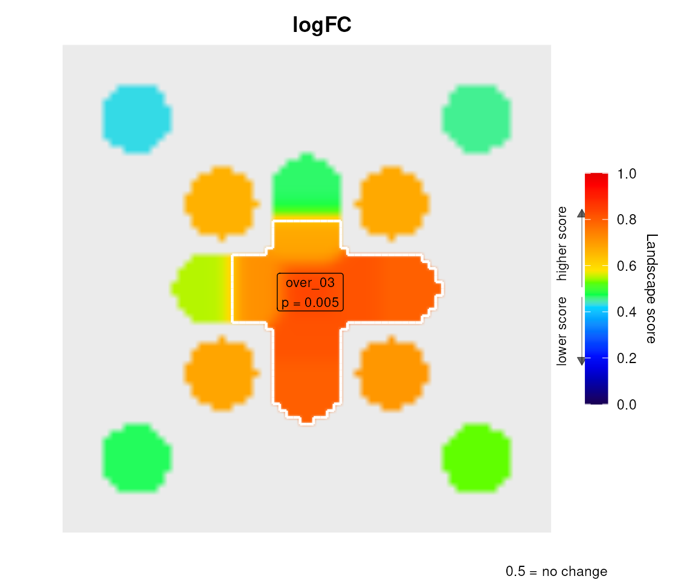

vignettes/levi_inference.Rmd
levi_inference.RmdEvery inferential function in levi is a permutation test. What separates them is not the statistic but what is shuffled, because that decides which hypothesis is being tested. Before reading a p-value from levi, decide which of these three questions you are asking.
| What is shuffled | Question answered | Functions |
|---|---|---|
| Node labels: expression values change places on a fixed network and layout | Is expression spatially organised on this network, beyond what any arrangement of the same values would give? |
levi(n_perm > 0),
leviGraphMoran(), leviGraphGetisOrd(),
leviGraphSpectrum(),
leviGraphWeightedTopology()
|
| Sample labels: condition labels change places across biological replicates | Does the condition change expression in this region of the network, in a way that replicates? |
leviReplicateInference(),
leviGraphClusterInference(),
leviGraphTFCEInference(),
leviGraphTFCEFreedmanLane(),
leviBulkGraphInference(), the leviSingleCell*
family |
| Edges: the network is rewired keeping every node’s degree | Does the clustering depend on the specific wiring, or would any network with these degrees show it? |
leviGraphRewiringInference(),
leviGraphTFCERewiring()
|
The three are not interchangeable. A node-label test can be highly significant for a single unreplicated sample, because it says nothing about replication. A sample-label test with three replicates per group can never reach p < 0.05, because only 20 label arrangements exist. A rewiring test keeps the expression values fixed and asks a purely topological question.
The examples below use the bundled hub network (one hub, eight
satellites) and small simulated data so that the vignette builds
quickly. Increase n_perm in real analyses.
hub_net <- system.file("extdata", "hub_network.dat", package = "levi")
genes <- c("HUB", paste0("N", 1:8))
# Four control and four treated replicates on a log2 scale. The hub and its
# first two neighbours respond to treatment; the rest do not.
set.seed(2026)
expression <- matrix(rnorm(9 * 8, mean = 6, sd = 0.3), 9, 8,
dimnames = list(genes, paste0("s", 1:8)))
groups <- rep(c("control", "treated"), each = 4)
expression[c("HUB", "N1", "N2"), groups == "treated"] <-
expression[c("HUB", "N1", "N2"), groups == "treated"] + 1.5levi() with n_perm > 0 shuffles the
measured node values, recalculates the edge signals and rebuilds the
landscape in every permutation. The layout never moves. By default
(inference_unit = "region") the eight-connected regions
beyond the neutral score are redetected in each permutation, and every
observed region is compared with the largest regional mass seen
under the null, over both directions. Taking the maximum controls the
search across all regions without a further adjustment (Westfall and Young
1993; Nichols and Holmes
2002).
lfc <- rowMeans(expression[, groups == "treated"]) -
rowMeans(expression[, groups == "control"])
set.seed(1)
res <- levi(
expressionInput = data.frame(ID = genes, logFC = lfc),
networkCoordinatesInput = hub_net,
fileTypeInput = "dat",
geneSymbolInput = "ID",
readExpColumn = readExpColumn("logFC-logFC"),
signal_mode = "logfc",
resolutionValueInput = 20,
smoothValueInput = 30,
n_perm = 199)
res$regions$summary[, c("Region", "Direction", "Cells", "Mass",
"PSpatial", "Significant")]
#> Region Direction Cells Mass PSpatial Significant
#> 1 over_03 over 486 0.033651593 0.005 TRUE
#> 2 over_05 over 85 0.003513050 1.000 FALSE
#> 3 over_04 over 85 0.002689098 1.000 FALSE
#> 4 over_02 over 85 0.002476661 1.000 FALSE
#> 5 over_01 over 85 0.002083346 1.000 FALSEPSpatial says how often a random placement of the same
nine values produced a region at least as massive anywhere on the
landscape. It is conditional on the network and on the layout: a
different drawing of the same graph is a different experiment. It does
not say the treatment effect replicates, because the
permutation never touched the samples.
leviRegionGenes() ranks the nodes that support each
region, as an interpretation aid rather than a gene-level test:
head(leviRegionGenes(res, top_n = 3))
#> Region Gene NodeSignal Contribution Rank
#> 1 over_01 N4 0.5499705 1.114465e-04 1
#> 2 over_01 N3 0.4665514 7.459859e-05 2
#> 3 over_01 HUB 0.8366013 6.461278e-09 3
#> 4 over_02 N2 0.7924064 6.521380e-04 1
#> 5 over_02 N3 0.4665514 7.459859e-05 2
#> 6 over_02 HUB 0.8366013 6.461278e-09 3inference_unit = "cell" tests every occupied grid cell
and adjusts the two directional families jointly with
p_adjust_method (“BY” by default). Neighbouring cells are
almost perfectly correlated, so this adjustment is very conservative.
The mode is kept because the graphical interface draws its contours from
it and for comparison with earlier versions; the regional test is the
recommended default.
When replicates exist, permute them.
leviReplicateInference() recomputes the gene-level log
fold-change, rebuilds the landscape and redetects regions for every
arrangement of the condition labels. The regions are the same objects as
above, but the p-value now answers the replication question.
set.seed(1)
rep_res <- leviReplicateInference(
expression, groups, test = "treated", control = "control",
networkCoordinatesInput = hub_net, fileTypeInput = "dat",
resolutionValueInput = 20, smoothValueInput = 30)
rep_res$regions$summary[, c("Region", "Direction", "Mass", "PSpatial",
"Significant")]
#> Region Direction Mass PSpatial Significant
#> 1 over_03 over 0.033651593 0.02857143 TRUE
#> 2 over_05 over 0.003513050 0.48571429 FALSE
#> 3 over_04 over 0.002689098 0.48571429 FALSE
#> 4 over_02 over 0.002476661 0.48571429 FALSE
#> 5 over_01 over 0.002083346 0.48571429 FALSE
rep_res$metadata$possible_permutations
#> [1] 70With four replicates per group there are
choose(8, 4) = 70 distinct label arrangements, so the test
enumerated all of them (permutation_exact is
TRUE) and the smallest attainable p-value is 1/70.
The same null drives the graph-native tests, which do not need a
layout at all. leviGraphTFCEInference() fits a limma
moderated t per gene (Smyth 2004) and integrates it over
thresholds with threshold-free cluster enhancement (Smith and Nichols
2009), using network components as clusters:
tfce <- leviGraphTFCEInference(
expression, groups, hub_net, test = "treated", control = "control")
tfce$statistic[order(tfce$statistic$PGlobal), ][1:4, ]
#> Gene T TFCE POver PUnder PGlobal GlobalSignificant
#> HUB HUB 8.219189 264.0536523 0.01428571 1 0.02857143 TRUE
#> N1 N1 6.796803 180.1085001 0.01428571 1 0.02857143 TRUE
#> N2 N2 6.741273 180.1085001 0.01428571 1 0.02857143 TRUE
#> N4 N4 1.009317 0.7337502 0.58571429 1 0.80000000 FALSEPGlobal compares each gene’s TFCE score with the maximum
over all genes and both directions in every permutation, which controls
the family-wise error rate across the network.
Pass blocks (donor, batch, litter) to permute labels
only within blocks; the block also enters the linear model as a fixed
effect. When nuisance covariates are continuous or numerous,
leviGraphTFCEFreedmanLane() permutes the residuals of the
nuisance-only model instead of the labels (Freedman and Lane 1983; Winkler et al. 2014). The single-cell
functions aggregate cells into donor pseudobulks and permute the donors,
jointly across cell types, so that cells are never treated as replicates
(Squair et al.
2021).
A permutation p-value cannot fall below 1 / (number of arrangements). When that floor is above the significance level, nothing in the data can rescue the test, and levi now says so with a warning. The table gives the floor for common designs:
| Design | Arrangements | Smallest p |
|---|---|---|
| 3 vs 3, unblocked | 20 | 0.050 |
| 4 vs 4, unblocked | 70 | 0.014 |
| 4 donors, paired (within-donor swaps) | 16 | 0.063 |
| 5 donors, paired | 32 | 0.031 |
| 6 donors, paired | 64 | 0.016 |
Node-label tests do not have this problem, because the number of ways to arrange gene values across a network is astronomically large. That is exactly why their p-values must not be read as evidence of replication.
The rewiring tests keep the gene scores fixed and generate networks with the same degree sequence by degree-preserving edge swaps (Maslov and Sneppen 2002). They ask whether the observed clustering needs the specific wiring or merely the hubs’ degrees.
scores <- setNames(tfce$statistic[["T"]], tfce$statistic$Gene)
set.seed(1)
rew <- leviGraphRewiringInference(scores, hub_net, threshold = 1.5,
n_perm = 199)
rew$regions$summary[, c("Region", "Direction", "Nodes", "Mass", "PSpatial")]
#> Region Direction Nodes Mass PSpatial
#> 1 over_01 over 3 21.75726 1On a star network every rewiring that preserves degrees returns the same graph, so this test is uninformative here by construction. On real interactomes, where many graphs share a degree sequence, it separates “the responding genes are hubs” from “the responding genes are wired together”.
leviGraphMoran() and leviGraphGetisOrd()
are the graph analogues of the spatial statistics used in geography,
Moran’s I (Moran
1950) and Getis-Ord G (Getis and Ord 1992). Both use the
node-label null. The local tables carry a Benjamini-Hochberg adjustment
across nodes (Benjamini and Hochberg 1995), and
the Getis-Ord Significant flag uses the two-sided adjusted
p-value.
set.seed(1)
moran <- leviGraphMoran(scores, hub_net, n_perm = 199)
moran$global
#> MoranI P
#> 1 -0.3378031 0.05
head(leviGraphGetisOrd(scores, hub_net, n_perm = 199, seed = 1)[,
c("Gene", "GiStar", "PTwoSided", "PAdjusted", "Class")])
#> Gene GiStar PTwoSided PAdjusted Class
#> 1 HUB NA NA NA <NA>
#> 2 N1 2.0669175 0.03 0.24 hotspot
#> 3 N2 2.0561308 0.12 0.48 hotspot
#> 4 N3 0.6156677 0.50 0.68 hotspot
#> 5 N4 0.9427160 0.25 0.50 hotspot
#> 6 N5 0.8535289 0.24 0.50 hotspotEvery permutation function accepts BPPARAM. The default
SerialParam() runs the null in the calling process;
BiocParallel::MulticoreParam() or SnowParam()
spread it over workers. All randomness is drawn before the workers
start, so the result is identical for any back-end given the same
seed.
library(BiocParallel)
tfce_par <- leviGraphTFCEInference(
expression, groups, hub_net, test = "treated", control = "control",
n_perm = 999, BPPARAM = MulticoreParam(4))exact, possible_permutations).leviReplicateInference() for the same regions
and leviGraphTFCEInference() as the layout-free
confirmation. A network in which most genes respond gives a node-label
p-value near 1 by construction, while both sample-label tests remain
informative.
sessionInfo()
#> R version 4.6.1 (2026-06-24)
#> Platform: x86_64-pc-linux-gnu
#> Running under: Ubuntu 24.04.4 LTS
#>
#> Matrix products: default
#> BLAS: /usr/lib/x86_64-linux-gnu/openblas-pthread/libblas.so.3
#> LAPACK: /usr/lib/x86_64-linux-gnu/openblas-pthread/libopenblasp-r0.3.26.so; LAPACK version 3.12.0
#>
#> locale:
#> [1] LC_CTYPE=en_US.UTF-8 LC_NUMERIC=C
#> [3] LC_TIME=en_US.UTF-8 LC_COLLATE=en_US.UTF-8
#> [5] LC_MONETARY=en_US.UTF-8 LC_MESSAGES=en_US.UTF-8
#> [7] LC_PAPER=en_US.UTF-8 LC_NAME=C
#> [9] LC_ADDRESS=C LC_TELEPHONE=C
#> [11] LC_MEASUREMENT=en_US.UTF-8 LC_IDENTIFICATION=C
#>
#> time zone: Etc/UTC
#> tzcode source: system (glibc)
#>
#> attached base packages:
#> [1] stats graphics grDevices utils datasets methods base
#>
#> other attached packages:
#> [1] levi_1.99.0 BiocStyle_2.40.0
#>
#> loaded via a namespace (and not attached):
#> [1] SummarizedExperiment_1.42.0 gtable_0.3.6
#> [3] xfun_0.61 bslib_0.12.0
#> [5] ggplot2_4.0.3 htmlwidgets_1.6.4
#> [7] Biobase_2.72.0 lattice_0.23-1
#> [9] vctrs_0.7.3 tools_4.6.1
#> [11] generics_0.1.4 stats4_4.6.1
#> [13] parallel_4.6.1 tibble_3.3.1
#> [15] pkgconfig_2.0.3 Matrix_1.7-6
#> [17] RColorBrewer_1.1-3 S7_0.2.2
#> [19] desc_1.4.3 S4Vectors_0.50.3
#> [21] lifecycle_1.0.5 compiler_4.6.1
#> [23] farver_2.1.2 stringr_1.6.0
#> [25] textshaping_1.0.5 statmod_1.5.2
#> [27] Seqinfo_1.2.0 codetools_0.2-20
#> [29] htmltools_0.5.9 sass_0.4.10
#> [31] yaml_2.3.12 pkgdown_2.2.1
#> [33] pillar_1.11.1 jquerylib_0.1.4
#> [35] BiocParallel_1.46.0 limma_3.68.5
#> [37] DelayedArray_0.38.2 cachem_1.1.0
#> [39] abind_1.4-8 tidyselect_1.2.1
#> [41] digest_0.6.39 stringi_1.8.9
#> [43] dplyr_1.2.1 reshape2_1.4.5
#> [45] bookdown_0.48 labeling_0.4.3
#> [47] fastmap_1.2.0 grid_4.6.1
#> [49] cli_3.6.6 SparseArray_1.12.2
#> [51] magrittr_2.0.5 S4Arrays_1.12.0
#> [53] withr_3.0.3 scales_1.4.0
#> [55] rmarkdown_2.32 XVector_0.52.0
#> [57] matrixStats_1.5.0 igraph_2.3.3
#> [59] otel_0.2.0 ragg_1.5.2
#> [61] evaluate_1.0.5 knitr_1.52
#> [63] GenomicRanges_1.64.0 IRanges_2.46.0
#> [65] rlang_1.3.0 Rcpp_1.1.2
#> [67] glue_1.8.1 xml2_1.6.0
#> [69] BiocManager_1.30.27 BiocGenerics_0.58.1
#> [71] jsonlite_2.0.0 R6_2.6.1
#> [73] plyr_1.8.9 MatrixGenerics_1.24.0
#> [75] systemfonts_1.3.2 fs_2.1.0